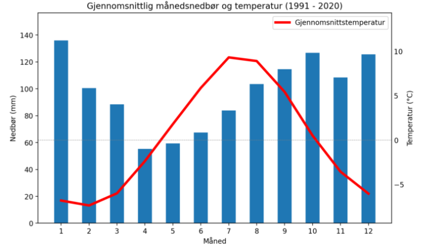
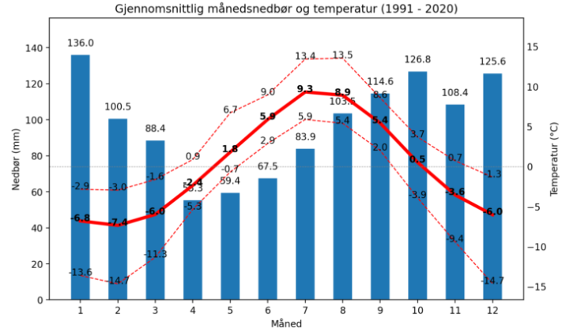
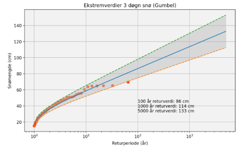
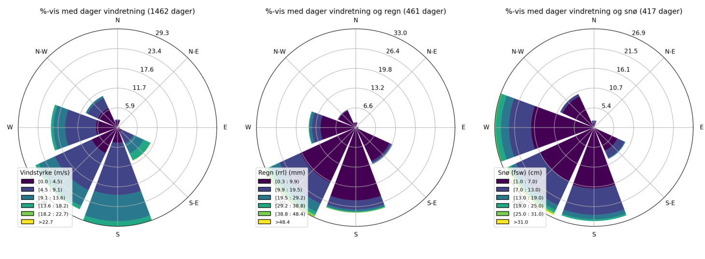

Forklaring av plott¶
Forklaringer på korleis dei forskjellige plott blir generert.
Gjennomsnittleg månedsnedbør og temperatur¶
Filterer data ned til siste normalperiode, 1991-2020.
Gjennomsnittleg temperatur og nedbnør for kvar månad blir rekna.
Parameter som er brukt er «rr» for nedbør og «tm» for temperatur.
Plottet kan vises med tall på kvar søyle og temperaturpunkt, samt maksimal og minimal måntleg snittemperatur ved å velje annotert plot.
 {kind=link}
{kind=link}
Periode med snø¶
Plot som viser snømengden gjennom året, sammen med gjennomsnittstempertur. Plottet viser kva periodar område vanlegvis har hatt snø.
Både snømengde og temperatur er vist som 7-dagers glidende gjennomsnitt for å glatte ut kurvene.
For snø vises også den maksimale og minimale 7-dagers glidende gjennomsnitt.

Årsnedbør¶
Plottet viser årsnedbør for alle år i datasettet, altså fra 1958 - 2022.
Data som blir brukt i plottet er parameter «rr», som all nedbør. Denne er summert opp for heile året.
Det blir rekna ut ein linær trend gjennom heile datasettet, sammen med gjennomsnitt. Det er også vist gjennomsnitt for både normalperiode 1991-2020 og 1961-1990.
Årsnedbøren for siste normalperiode blir vist som tekst i plottet.

Maksiaml snødybde¶
Plottet viser maksimal snødybde for alle år i datasettet, altså fra 1958 - 2022.
Data som er brukt er parameteren «sd», som er snødybde.
Årleg maksimalverdi blir henta ut, som er den høgste snødybden registert for året.
Det blir rekna ut ein linær trend gjennom heile datasettet, sammen med gjennomsnitt. Det er også vist gjennomsnitt for både normalperiode 1991-2020 og 1961-1990.

Maksimal 3 døgns nysnødybde¶
Plottet viser maksimal 3 døgns nysnødybde for alle år i datasettet, altså fra 1958 - 2022.
Data som er brukt er parameteren «sdfsw3d», 3 døgns nysnødybde.
Maksimalverdien for året blir henta ut, og presentert i plottet.
Det blir rekna ut ein linær trend gjennom heile datasettet, sammen med gjennomsnitt. Det er også vist gjennomsnitt for både normalperiode 1991-2020 og 1961-1990.
Maksimalverdi, samt snitt for siste normalperiode blir vist som tekst.

Ekstremverdier 3 døgn snø¶
Plottet viser utrekning av ekstremverdier for 3 døgn snømengde.
Årleg maksverdi av 3 døgn snømengde blir tatt ut og med ein standard gumbelfordeling for blir det rekna ut returverdier for 100, 1000 og 5000 år. Merk at her er det stor usikkerhet på grunn av kort datasett. Det anbefales å vurdere supplerande metoder for detaljerte farevurderingar.
Datasettet kan lastes ned, og NVE eksternrapport 2014/22 (https://publikasjoner.nve.no/rapport/2014/rapport2014_22.pdf) har gode anbefalinger som gir meir presist resultat.
{kind=link}
Vind¶
Plottet har 3 subplot
Vindrose for vindretning uansett nedbør eller ikkje, delt inn i vindstyrker
Vindrose for vindretning med regn, delt inn i mm regn (rrl)
Vindrose for vindretning med nynsø siste døgn (fsw), delt inn i cm snø
Det er viktig å merke seg at her blir det brukt nye parametere i forhold til tidligre plott. Generell nedbør parameter er bytta ut med «rrl» som er regn i siste døgn, og «fsw» som er snø i siste døgn. Vindparametere som er brukt er «windDirection10m24h06» og «windSpeed10m24h06»
Vær obs på at dette er eit kortvarig datasett som går fra 2018 - 2022. Det er derfor stor usikkerhet på resultatet, særleg på dagar i låglandet der det kan vere veldig få døgn med snø, og dermed lite statisitsk grunnlag for å berekne vindrose..
Ved tolking av vindrose må ein både sjå på % antall dager, men også på kva mengde som kjem ved kvar vindretning det kan f.eks være flest dager frå vest, men dagene med virkelig snøfall kan komme fra andre retninger.
{kind=link}